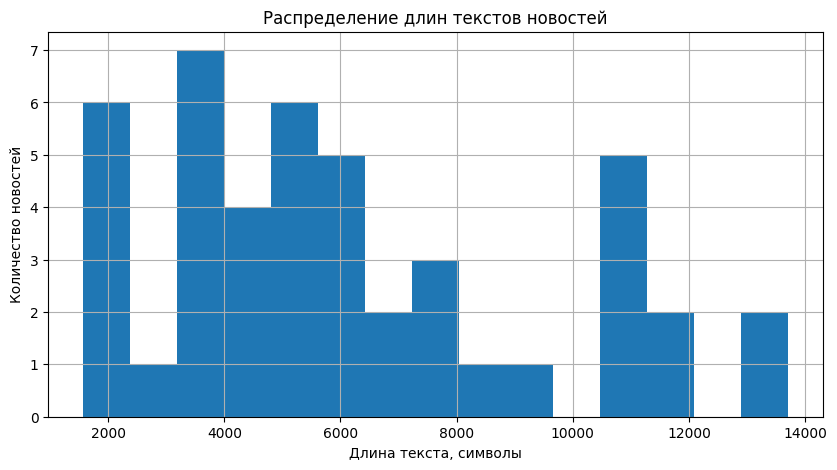
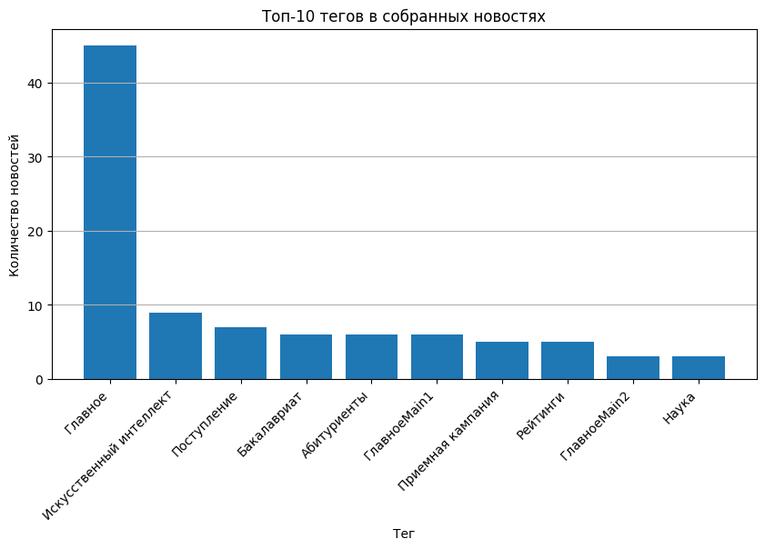

Лабораторная работа 8: Скрапинг и анализ текста
Цели
- Освоить базовые методы веб-скрапинга с использованием
Python - Собрать датасет новостей с сайта ITMO.NEWS
- Получить подробную информацию по каждой новости: текст, дату, просмотры, теги и ссылку
- Сохранить собранные данные в CSV-файлы для дальнейшего анализа
- Выполнить первичный анализ текстовых данных
Задачи
В рамках лабораторной работы требовалось:
- Спарсить общий список новостей с сайта ITMO.NEWS
- Для каждой новости из общего списка получить:
- идентификатор новости
- название новости
- дату размещения
- URL страницы новости
- Для каждой страницы конкретной новости дополнительно спарсить:
- идентификатор новости
- название
- дату размещения
- количество просмотров
- полный текст новости
- теги
- Сохранить общий список новостей в CSV-файл
- Сохранить подробные данные по новостям в CSV-файл в папке
news_content - Провести базовый анализ текстов и тегов
Ход работы
1. Описание источника данных и структуры датасета
В качестве источника данных использовался сайт ITMO.NEWS. Для скрапинга был выбран раздел с главными новостями.
Структура общего датасета:
| Столбец | Описание |
|---|---|
id |
целочисленный идентификатор новости, извлеченный из URL |
title |
название новости |
date |
дата размещения новости |
url |
ссылка на страницу конкретной новости |
На странице конкретной новости собирались подробные данные: количество просмотров, полный текст и теги.
Структура подробного датасета:
| Столбец | Описание |
|---|---|
id |
целочисленный идентификатор новости |
title |
название новости |
date |
дата размещения новости |
views |
количество просмотров новости |
text |
полный текст новости |
tags |
список тегов новости |
url |
ссылка на страницу новости |
Для хранения результатов были предусмотрены два CSV-файла:
| Файл | Содержимое |
|---|---|
news_general.csv |
общий список новостей с идентификаторами, названиями, датами и URL |
news_content/news_content.csv |
подробные данные по каждой новости: текст, просмотры, теги и метаданные |
Для работы были импортированы библиотеки requests, BeautifulSoup, pandas, re, os, time и matplotlib:
import os
import re
import time
import requests
import pandas as pd
import matplotlib.pyplot as plt
from bs4 import BeautifulSoup
from urllib.parse import urljoin
Основные константы проекта:
DOMAIN = "https://news.itmo.ru"
MAIN_NEWS_URL = "https://news.itmo.ru/ru/main_news/"
OUTPUT_DIR = "news_content"
GENERAL_CSV = "news_general.csv"
CONTENT_CSV = os.path.join(OUTPUT_DIR, "news_content.csv")
os.makedirs(OUTPUT_DIR, exist_ok=True)
2. Сбор общего списка новостей
На первом этапе был реализован сбор общего списка новостей из раздела main_news. Для загрузки страницы использовалась функция get_soup(), которая отправляет GET-запрос и преобразует HTML-код страницы в объект BeautifulSoup:
def get_soup(url):
"""Загружает страницу и возвращает объект BeautifulSoup."""
response = requests.get(url)
response.raise_for_status()
return BeautifulSoup(response.text, "html.parser")
Идентификатор новости извлекался из URL с помощью регулярного выражения:
def extract_news_id(url):
"""Извлекает целочисленный идентификатор новости из URL."""
match = re.search(r"/news/(\d+)/", url)
if match:
return int(match.group(1))
return None
Так как ссылки на новости могут относиться к разным разделам сайта, использовалось регулярное выражение, которое учитывает несколько вариантов URL:
links = soup.find_all(
"a",
href=re.compile(r"/ru/.*/news/\d+/|/ru/news/\d+/")
)
Для каждой найденной ссылки сохранялись ID новости, заголовок, дата размещения и полный URL. Чтобы не сохранять одну и ту же новость несколько раз, дополнительно выполнялось удаление дублей по идентификатору:
unique_items = {}
for item in news_items:
unique_items[item["id"]] = item
return list(unique_items.values()), next_url
После этого была создана функция collect_news_list(), которая проходит несколько страниц раздела с новостями и собирает данные в один датафрейм:
news_general_df = collect_news_list(
MAIN_NEWS_URL,
max_pages=5,
delay=1
)
news_general_df.head()
В результате было собрано 45 новостей. Общий список был сохранен в файл news_general.csv:
news_general_df.to_csv(
GENERAL_CSV,
index=False,
encoding="utf-8-sig"
)
print(f"Файл сохранен: {GENERAL_CSV}")
print(f"Количество новостей: {len(news_general_df)}")
Результат выполнения:
| Показатель | Значение |
|---|---|
| Количество обработанных страниц | 5 |
| Количество собранных новостей | 45 |
| Файл с общим списком | news_general.csv |
Был получен базовый датасет, который дальше использовался для перехода на страницы конкретных новостей.
3. Парсинг страниц конкретных новостей
После получения общего списка новостей был выполнен переход на страницы конкретных новостей. На этом этапе для каждой новости собирались подробные данные: дата, количество просмотров, полный текст и теги.
Для парсинга одной страницы была создана функция parse_news_page(). Сначала из страницы извлекались идентификатор и заголовок новости:
news_id = extract_news_id(url)
title = ""
title_tag = soup.find("h1")
if title_tag:
title = clean_text(title_tag.get_text())
if not title and soup.title:
title = clean_text(soup.title.get_text())
Дата размещения искалась в полном тексте страницы с помощью регулярного выражения:
date_match = re.search(
r"\d{1,2}\s+[А-Яа-яЁё]+\s+\d{4}",
page_text
)
if date_match:
date = date_match.group(0)
Для извлечения просмотров использовался отдельный шаблон, который учитывает строку вида 14 Апреля 2026, 16:27 UTC+3 28508:
views_patterns = [
r"\d{1,2}\s+[А-Яа-яЁё]+\s+\d{4},\s*\d{1,2}:\d{2}\s*UTC[+-]\d+\s+(\d+)",
r"Просмотров[:\s]+(\d+)",
r"Просмотры[:\s]+(\d+)",
r"(\d+)\s+просмотров",
r"(\d+)\s+просмотр(?:ов|а)?",
r"views?[:\s]+(\d+)"
]
for pattern in views_patterns:
views_match = re.search(pattern, page_text, flags=re.IGNORECASE)
if views_match:
views = int(views_match.group(1))
break
Для извлечения текста использовалось несколько возможных CSS-селекторов. Из найденных блоков выбирался наиболее подходящий по объему текста, а повторяющиеся фрагменты удалялись:
selectors = [
"div.news-page__content",
"div.news-detail__content",
"div.article__content",
"div.content-text",
"div.news-content",
"div.article-content",
"div.text",
"article"
]
Теги извлекались из ссылок, ведущих на страницы поиска или тегов. Дополнительно выполнялась очистка служебных значений, например Bottom:
tag_links = soup.find_all(
"a",
href=re.compile(r"/ru/search/|/ru/tag/|/ru/tags/")
)
for tag in tag_links:
tag_text = clean_text(tag.get_text())
if "Bottom" in tag_text:
tag_text = tag_text.replace("Bottom", "")
if tag_text and tag_text not in tags:
tags.append(tag_text)
Работа функции была проверена на одной новости:
| Поле | Пример результата |
|---|---|
id |
14258 |
title |
Яндекс, Сбер, VK и не только: магистратуры ИТМО, которые поддерживают крупные компании |
date |
14 Апреля 2026 |
views |
28508 |
tags |
Магистратура, Поступление, Партнерство, Главное, Абитуриенты, Образовательные программы |
text_length |
11917 |
Также была выполнена проверка на повторы в тексте:
| Показатель | Значение |
|---|---|
| Всего абзацев | 47 |
| Уникальных абзацев | 47 |
| Повторов | 0 |
После проверки одной новости функция была применена ко всему общему датасету. Для этого использовалась функция collect_news_content():
news_content_df = collect_news_content(
news_general_df,
delay=1
)
news_content_df.head()
В результате был сформирован подробный датасет с текстами новостей, тегами и просмотрами.
4. Сохранение и проверка собранных данных
После парсинга страниц конкретных новостей подробный датасет был сохранен в CSV-файл. Для корректного отображения русскоязычного текста использовалась кодировка utf-8-sig:
news_content_df.to_csv(
CONTENT_CSV,
index=False,
encoding="utf-8-sig"
)
print(f"Файл сохранен: {CONTENT_CSV}")
print(f"Количество новостей: {len(news_content_df)}")
Результат контрольной проверки созданных файлов:
| Показатель | Значение |
|---|---|
| Общий CSV создан | True |
| Подробный CSV создан | True |
| Количество новостей в общем датасете | 45 |
| Количество новостей в подробном датасете | 45 |
| Новостей без текста | 0 |
| Новостей без даты | 0 |
| Новостей без просмотров | 0 |
5. Первичный анализ собранных данных
После сохранения датасета был выполнен небольшой анализ собранных текстов. Для этого в подробный датафрейм был добавлен столбец text_length, в котором хранится длина текста новости в символах:
news_content_df["text_length"] = news_content_df["text"].str.len()
text_stats = news_content_df["text_length"].describe()
text_stats
По рассчитанной статистике можно оценить общий объем собранных текстов: минимальную, максимальную и среднюю длину новостей:
| Показатель | Значение |
|---|---|
| Количество новостей | 45 |
| Средняя длина текста | 3806.36 |
| Минимальная длина текста | 509 |
| Максимальная длина текста | 11917 |
Далее было построено распределение длин текстов. По графику видно, что большинство новостей имеют небольшой или средний объем, а очень длинных материалов в датасете меньше:

После анализа длины текстов были обработаны теги новостей. Так как в одном поле tags хранится несколько тегов через запятую, они были разделены и преобразованы в отдельную таблицу:
all_tags = []
for tags in news_content_df["tags"].dropna():
for tag in str(tags).split(","):
tag = clean_text(tag)
if tag:
all_tags.append(tag)
tags_df = pd.DataFrame(all_tags, columns=["tag"])
top_tags_df = tags_df["tag"].value_counts().reset_index()
top_tags_df.columns = ["tag", "count"]
top_tags_df.head(15)
| Тег | Количество |
|---|---|
Главное |
44 |
Образование |
10 |
Наука |
9 |
Поступление |
7 |
Абитуриенты |
6 |
Студенты |
5 |
Магистратура |
4 |
Партнерство |
4 |
Международное сотрудничество |
4 |
Искусственный интеллект |
3 |
Для наглядности был построен график топ-10 тегов:

Выводы
В ходе лабораторной работы был выполнен скрапинг сайта ITMO.NEWS. Сначала был собран общий список новостей с идентификаторами, названиями, датами и URL, затем для каждой новости были получены подробные данные: количество просмотров, полный текст и теги. Итоговые данные были сохранены в два CSV-файла: news_general.csv и news_content/news_content.csv.
Также была выполнена проверка качества собранного датасета: все 45 новостей содержат дату, текст и количество просмотров. Дополнительно был проведен первичный анализ текстов: рассчитана длина новостей, построено распределение длин текстов и определены наиболее частые теги. В результате были получены навыки загрузки HTML-страниц, извлечения данных из разной верстки и сохранения структурированных данных для дальнейшего анализа.
Ссылка на доску Colab: